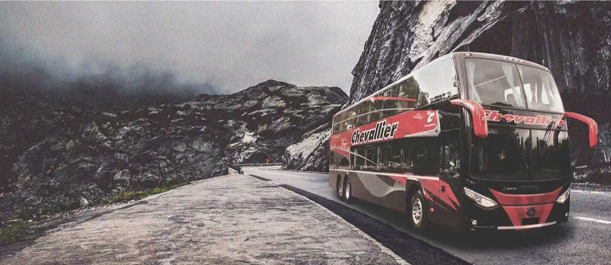

Acerca de Chevallier
Chevallier es la mejor forma de llegar a tu destino en micro. Con
más de 80
años de experiencia en
transporte
de pasajeros,
Chevallier cuenta con más de 500 destinos de Argentina, Bolivia, Brasil,
Paraguay y
Uruguay. Con Chevallier podés viajar en micro a destinos como Córdoba, Mar del Plata, Entre
Ríos,
Rosario.
Elegí Chevallier para tu viaje y comenzá a disfrutar de tus vacaciones comprando
tus
pasajes
de bus
al mejor precio.
| Horario | Destino | Precio |
|---|---|---|
| 20:30 | Santa Rosa | 3000 |
| 22:31 | Cordoba | 5000 |
| 21:59 | Rio IV | 1200 |
| 18:20 | Catamarca | 6000 |